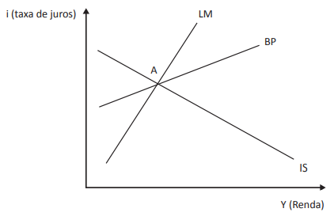
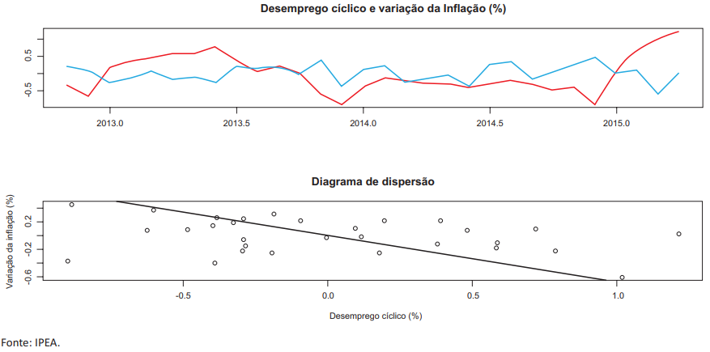

Exercícios Resolvidos: Macroeconomia
Resoluções comentadas de exercícios selecionados sobre Macroeconomia em provas padronizadas e concursos públicos diversos.
Contato: pedro.chaim@ufsc.br.
ENADE 2022
Questão 13 (ENADE 2022 – Economia)
Exercício 1
Tema: Multiplicador monetário e política monetária.
A equação \(a = \frac{1}{1 − d(1 − e)}\) representa o multiplicador do sistema monetário, em que \(a = \frac{MP}{B}\), \(d = \frac{DV_{BC}}{MP}\), \(e = \frac{E_T}{DV_{BC}}\), sendo \(MP\) os meios de pagamento, \(B\) a base monetária, \(DV_{BC}\) o depósito à vista dos bancos comerciais e \(E_T\) o encaixe dos bancos.
DE CARVALHO, F. J. C. et al. Economia Monetária e Financeira: Teoria e Política. 3. ed. São Paulo: GEN Atlas, 2015 (adaptado).
Considerando as relações entre as variáveis financeiras expressas nessa equação, avalie as afirmações a seguir.
- O Banco Central, ao alterar as taxas de juros das operações de redesconto e empréstimos aos bancos comerciais, está interferindo diretamente na razão \(d\).
- O multiplicador monetário, ao ser ajustado por meio do aumento das reservas dos bancos, constitui estratégia dos bancos centrais para enfrentar as crises de liquidez.
- O aumento da aversão ao risco dos bancos comerciais contrai os meios de pagamento, em momentos de crises financeiras, como no caso do estouro da bolha do subprime.
- A razão \(e\) representa o percentual fixado legalmente dos depósitos à vista — que devem ser recolhidos ao Banco Central —, além de refletir a aversão dos bancos comerciais a recorrer a auxílios do Banco Central.
É correto apenas o que se afirma em
A. I e II.
B. I e III.
C. III e IV.
D. I, II e IV.
E. II, III e IV.
Questão 16 (ENADE 2022 – Economia)
Exercício 2
Tema: Regime de Metas de Inflação (RMI) e choques de oferta/demanda.
A partir de 1999, a política monetária brasileira, a exemplo do que ocorre em vários países emergentes e desenvolvidos, passou a ser realizada no contexto do Regime de Metas de Inflação (RMI). A ideia por trás desse arcabouço é que o Banco Central (Bacen) se compromete a alcançar determinada meta anual de inflação. Nesse sentido, essa passa a ser uma regra a ser seguida pela autoridade monetária, aumentando-se a credibilidade da política monetária, o que serve para reduzir ou “ancorar” as expectativas de inflação dos agentes privados. O principal instrumento utilizado é a taxa básica de juros, definida como a taxa de juros da Selic para títulos públicos federais. A meta de inflação, determinada com dois anos de antecedência pelo Conselho Monetário Nacional (CMN), é balizada pelo Índice Nacional de Preços ao Consumidor Amplo (IPCA), que constitui o índice oficial. Existe uma margem de tolerância que permite que a variação anual do índice esteja 2% abaixo ou acima da meta estipulada. Outra característica do RMI é sua transparência. No caso brasileiro, após a reunião do Comitê de Política Monetária (Copom), o Bacen publica, em seu portal, a Ata do Copom, que apresenta todos os indicadores econômicos analisados por seus integrantes.
VASCONCELLOS, M. S.; GAMBOA, U. M. de; TUROLLA, A. Macroeconomia para gestão empresarial. 1. ed. São Paulo: Saraiva, 2016 (adaptado).
Considerando as informações apresentadas, ao que se refere ao RMI, avalie as afirmações a seguir.
- O RMI foi implementado no Brasil em 1999, com a autonomia operacional do Bacen, que foi transformada em independência, de fato, após a crise financeira internacional de 2008.
- A discricionariedade constitui princípio básico de funcionamento da política monetária do RMI, pois permite mudanças na taxa de juros para o alcance da meta, conforme a perspectiva keynesiana de funcionamento adequado da política monetária.
- O RMI vem-se mostrando, no Brasil e em outros países em que foi implementado, uma estratégia de política de combate à inflação alternativa ao que se praticava no passado, como, por exemplo, o cumprimento das metas de agregados monetários e(ou) a ancoragem cambial.
É correto o que se afirma em
- II, apenas.
- III, apenas.
- I e II, apenas.
- I e III, apenas.
- I, II e III.
Regime de Metas de Inflação
Segundo Kiley e Mishkin (2025), meta de inflação é uma estratégia de política monetária que possui cinco elementos centrais:
- Anúncio público pelo banco central de metas numéricas de médio prazo para a inflação — por exemplo, 2% — a fim de ancorar as expectativas de inflação.
- Compromisso institucional com a estabilidade de preços como objetivo primário da política monetária, ao qual os demais objetivos ficam subordinados.
- Estratégia prospectiva e informacionalmente abrangente, na qual muitas variáveis — e não apenas agregados monetários ou a taxa de câmbio — são usadas para decidir a configuração dos instrumentos de política.
- Maior transparência da estratégia de política monetária, por meio da comunicação com o público e os mercados sobre planos, objetivos e decisões das autoridades monetárias.
- Maior responsabilização do banco central pelo cumprimento de seus objetivos de inflação.
O Regime de Metas de Inflação Brasileiro
- Quem define a meta: CMN fixa ponto e banda (tipicamente com antecedência de 2 anos).
- Índice oficial: a meta é balizada pelo IPCA (IBGE), índice oficial de inflação.
- Quem executa: o BCB/Copom persegue a meta ajustando a Selic e usando instrumentos secundários (operações de mercado aberto, compulsórios, linhas de liquidez, swaps cambiais).
- Transparência/Accountability: Comunicados e Ata do Copom, Relatório Trimestral de Inflação; se o IPCA sai da banda, o BC envia carta aberta explicando causas e estratégia de retorno.
- Cronologia: RMI desde 1999; autonomia legal do BCB veio com a LC 179/2021.
Julgamento das assertivas
- I. Falsa. O início em 1999 está correto, mas não houve “independência” pós-2008; a autonomia legal do BCB é de 2021.
- II. Falsa. O princípio do RMI é a meta explícita (regra); a discrição é instrumental e condicionada pela meta, transparência e prestação de contas — não “discricionariedade como princípio básico”.
- III. Verdadeira. O RMI se consolidou como alternativa a regimes anteriores (metas de agregados monetários e/ou âncoras cambiais), com foco em ancorar expectativas e combater a inflação.
Questão 20 (ENADE 2022 – Economia)
Exercício 3
Tema: Modelos de crescimento (Harrod-Domar, Solow, Romer, Lucas).
Uma das formas de analisar o processo de crescimento econômico de um país é pela elaboração de modelos formais de crescimento. (i) O primeiro modelo específico de crescimento surgiu na década de 1930; neste primeiro modelo, de tradição keynesiana, tem-se o investimento líquido como a chave para o crescimento econômico, porém não se define como obtê-lo. (ii) Posteriormente, foi formulado um modelo que trouxe mudanças para a análise do crescimento, permitindo a substituição de capital por trabalho e introduzindo a contabilidade do crescimento e a análise de produtividade total dos fatores; neste modelo, no entanto, há uma limitação: o motor do crescimento é exógeno. Na década de 1980, dois novos modelos vencem esta limitação, ao considerarem, respectivamente, (iii) os gastos em pesquisa e desenvolvimento e (iv) os gastos com capital humano como fatores-chave para o crescimento econômico.
As descrições apresentadas em (i), (ii), (iii) e (iv) no texto referem-se, respectivamente, aos modelos teóricos de
- Harrod-Domar; Solow; Romer; e Lucas.
- Lucas; Harrod-Domar; Solow; e Romer.
- Romer; Solow; Lucas; e Harrod-Domar.
- Solow; Harrod-Domar; Romer; e Lucas.
- Harrod-Domar; Solow; Lucas; e Romer.
Questão 26 (ENADE 2022 – Economia)
Exercício 4
Tema: Efeitos de política fiscal/monetária no IS-LM.
Considere o gráfico seguinte, em que Y* é o produto de equilíbrio e i* consiste na taxa de juros de equilíbrio.

Com base no gráfico apresentado, avalie as afirmações a seguir.
- Uma diminuição da carga tributária deslocaria a curva IS para cima (direita) e provocaria um aumento da taxa de juros de equilíbrio e da renda.
- Uma compra de títulos, por parte da autoridade monetária, deslocaria a curva LM para cima (esquerda), o que provocaria um aumento da taxa de juros de equilíbrio e uma redução da renda da economia.
- Um aumento dos gastos autônomos deslocaria a curva de equilíbrio de bens e serviços para cima, o que, consequentemente, aumentaria a taxa de juros e a renda de equilíbrio.
- Uma política monetária restritiva provocaria, no equilíbrio IS-LM, um deslocamento da curva LM para baixo (direita) e uma redução das taxas de juros, o que, por sua vez, incentivaria um aumento dos investimentos e da renda.
É correto apenas o que se afirma em
- I e III.
- II e IV.
- III e IV.
- I, II e III.
- I, II e IV.
Modelo IS-LM de equilíbrio conjunto no mercado de bens e mercado financeiro
\[\begin{align*} Y &= \frac{1}{1-c_1}\left[ c_0 - c_1T + G + I(\stackrel{-}{i},\stackrel{-}{+})\right] \tag{IS} \\ M/P &= L(\stackrel{-}{i}, \stackrel{+}{Y}) \tag{LM} \end{align*}\]
Julgamento das Assertivas:
I. Uma diminuição da carga tributária deslocaria a curva IS para cima (direita) e provocaria um aumento da taxa de juros de equilíbrio e da renda.
Afirmação correta. “Diminuição da carga tributária” eleva a demanda agregada (mais renda disponível), deslocando a IS para a direita (para cima). No novo equilíbrio com LM dada, a economia opera com renda (\(Y\)) e taxa de juros (\(i\)) maiores.
II. Uma compra de títulos, por parte da autoridade monetária, deslocaria a curva LM para cima (esquerda), o que provocaria um aumento da taxa de juros de equilíbrio e uma redução da renda da economia.
Afirmação falsa um “compra de títulos” pelo Banco Central expande a base/quantidade de moeda, o que desloca a LM para a direita (para baixo), reduz \(i\) e aumenta \(Y\). A assertiva afirma o oposto (LM para cima/esquerda, \(i\uparrow\), \(Y\downarrow\)).
III. Um aumento dos gastos autônomos deslocaria a curva de equilíbrio de bens e serviços para cima, o que, consequentemente, aumentaria a taxa de juros e a renda de equilíbrio.
Afirmação correta. Um “aumento dos gastos autônomos” é um choque de demanda que desloca a IS para a direita (para cima). Com LM fixa, o novo equilíbrio tem \(i\) e \(Y\) maiores.
IV. Uma política monetária restritiva provocaria, no equilíbrio IS-LM, um deslocamento da curva LM para baixo (direita) e uma redução das taxas de juros, o que, por sua vez, incentivaria um aumento dos investimentos e da renda.
Afirmativa falsa. Uma “política monetária restritiva” reduz a oferta real de moeda, deslocando a LM para a esquerda (para cima). Isso eleva \(i\) e reduz \(Y\) — exatamente o contrário do que a assertiva descreve (ela fala em LM para baixo/direita, queda de \(i\) e aumento de \(Y\)).
Questão 27 (ENADE 2022 – Economia)
Exercício 5
Tema: IS-LM-BP, mobilidade de capitais e regime cambial.
O chamado “Consenso de Washington” predominou como receituário de política econômica durante a década de 1990. Entre suas propostas, incluía-se a liberalização comercial e financeira. Nesse mesmo período, observou-se uma predominância, para um conjunto grande de países, de medidas de maior flexibilidade para o fluxo de capitais estrangeiros.
Considerando as implicações da adoção do aumento do grau de mobilidade de capitais em determinado país e o referencial teórico do modelo IS-LM-BP para uma pequena economia aberta, avalie as afirmações a seguir.
- O aumento do grau de mobilidade de capitais, preconizado pelo Consenso de Washington, sob o regime de taxas de câmbio flutuantes, aumenta o poder da política fiscal de amortizar choques exógenos sobre a demanda agregada.
- A adoção de perfeita mobilidade de capitais resultará em uma política fiscal sem efeito sobre o produto no novo equilíbrio, se o regime cambial for o de taxa de câmbio fixa.
- A política monetária expansionista, supondo-se o regime de taxa de câmbio flutuante e a adoção de perfeita mobilidade de capitais, é capaz de aumentar o produto no novo equilíbrio.
É correto o que se afirma em
- I, apenas.
- III, apenas.
- I e II, apenas.
- II e III, apenas.
- I, II e III.
Política econômica e regime cambial
Câmbio fixo + alta mobilidade de capitais
- Política fiscal (↑\(G\) ou ↓\(T\)) é poderosa: desloca IS, pressiona juros, atrai capitais e obriga o BC a expandir \(M\) para manter o câmbio, deslocando LM.
- Política monetária é fraca: mudanças em \(M\) geram fluxos de capitais que forçam o BC a desfazer a operação.
Câmbio flexível + alta mobilidade de capitais
- Política monetária é eficaz: ↑\(M\) reduz \(i\), deprecia \(e\), aumenta \(NX\) e eleva \(Y\).
- Política fiscal é menos eficaz: o aumento de \(i\) aprecia \(e\), reduz \(NX\) e compensa parte do estímulo.
I. O aumento do grau de mobilidade de capitais, preconizado pelo Consenso de Washington, sob o regime de taxas de câmbio flutuantes, aumenta o poder da política fiscal de amortizar choques exógenos sobre a demanda agregada.
No modelo IS-LM-BP para pequena economia aberta, com câmbio flutuante e alta mobilidade de capitais, a política fiscal perde eficácia.
Um aumento de gasto público (ou redução de impostos) desloca a IS para a direita, eleva a taxa de juros doméstica acima da internacional, entra capital, há apreciação cambial e queda das exportações líquidas → a IS volta praticamente para a posição inicial. O efeito sobre o produto é muito pequeno (no limite, nulo). Logo, o aumento da mobilidade reduz, e não aumenta, o poder estabilizador da política fiscal.
Afirmativa falsa.
II. A adoção de perfeita mobilidade de capitais resultará em uma política fiscal sem efeito sobre o produto no novo equilíbrio, se o regime cambial for o de taxa de câmbio fixa.
Com câmbio fixo e perfeita mobilidade de capitais, a política fiscal é muito eficaz. A expansão fiscal desloca a IS para a direita, aumenta juros, entra capital, o que pressiona o câmbio à apreciação. Para manter o câmbio fixo, o BC compra reservas e expande a base monetária (LM para a direita), reforçando o aumento do produto. Assim, a política fiscal não é neutra sobre o produto; ela eleva o nível de atividade.
Afirmação falsa.
III. A política monetária expansionista, supondo-se o regime de taxa de câmbio flutuante e a adoção de perfeita mobilidade de capitais, é capaz de aumentar o produto no novo equilíbrio.
Com câmbio flutuante e perfeita mobilidade de capitais, a política monetária é a ferramenta eficaz. Uma expansão monetária desloca a LM para a direita, reduz a taxa de juros, provoca saída de capitais, depreciação cambial, aumento das exportações líquidas e novo deslocamento da IS para a direita. O novo equilíbrio tem produto maior.
Afirmação verdadeira
Questão 35 (ENADE 2022 – Economia)
Exercício 6
Tema: Curva de Phillips (inflação esperada, desemprego cíclico, choques).
A curva de Phillips, em sua forma moderna, enuncia que a taxa de inflação depende de três forças: inflação esperada; desvio do desemprego em relação à taxa natural, também chamada de desemprego cíclico; e choques de oferta. Essas três forças estão expressas na equação \[\begin{align} p = p^{e} - b(u - u^{n}) + v \end{align}\] em que \(p\) é a inflação, \(p^{e}\) a inflação esperada, \((u - u^{n})\) corresponde ao desemprego cíclico, \(b\) mede a relação entre inflação e desemprego, e \(v\) mede o choque de oferta.
MANKIW, N. G. Macroeconomia. São Paulo: Editora Atlas, 2021 (adaptado).
Quanto à curva de Phillips, avalie as afirmações a seguir.
- A relação entre inflação e desemprego é negativa e expressa pelo valor de \(b\).
- A curva de Phillips é usada para as seguintes finalidades: descrever o lado da demanda da economia em modelos macroeconômicos; medir o impacto do desvio do produto em relação ao seu nível potencial na taxa de inflação; medir a inércia inflacionária; e realizar previsões.
- Os modelos de curva de Phillips têm como objetivo medir a expectativa de inflação, a partir das variáveis da equação relacionadas à inflação e ao desemprego.
- As expectativas das famílias e empresas, no Regime de Metas de Inflação, repercutem nas decisões de política monetária.
É correto apenas o que se afirma em
- I e IV.
- II e III.
- III e IV.
- I, II e III.
- I, II e IV.
I. A relação entre inflação e desemprego é negativa e expressa pelo valor de \(b\).
Afirmação verdadeira. Veja que, de fato
\[\begin{align*} p = p^e -bu +bu^n + v \end{align*}\]
II. A curva de Phillips é usada para as seguintes finalidades: descrever o lado da demanda da economia em modelos macroeconômicos; medir o impacto do desvio do produto em relação ao seu nível potencial na taxa de inflação; medir a inércia inflacionária; e realizar previsões.
De fato, a curva de Phillips é usada para “medir o impacto do desvio do produto em relação ao seu nível potencial na taxa de inflação; medir a inércia inflacionária; e realizar previsões”, mas descreve o lado da oferta em modelos macroeconômicos (pense no modelo de três equações novo-keynesiano ou no modelo keynesiano tradicional expandido com curva de philips IS-LM-PC). Afirmação falsa.
III. Os modelos de curva de Phillips têm como objetivo medir a expectativa de inflação, a partir das variáveis da equação relacionadas à inflação e ao desemprego.
A curva de Phillips não “mede” as expectativas de inflação. As expectativas de inflação são um componente determinante da dinâmica de inflação-produto descrita por esse modelo. Afirmação falsa.
IV. As expectativas das famílias e empresas, no Regime de Metas de Inflação, repercutem nas decisões de política monetária.
Expectativas de famílias e empresas são determinantes para a trajetória de desemprego e inflação. Nesse sentido, repercutem nas decisões de política monetária (tomadas pelo BC). Afirmação verdadeira.
ENADE 2018
Questão 09 (ENADE 2018 – Economia)
Exercício 7
Tema: Câmbio e swap cambial em regime de câmbio flutuante
Se a saída de dólares for superior ao ingresso de recursos no País por vários meses seguidos, a retirada consecutiva de divisas afetará o preço do dólar. Caso o Banco Central decida evitar a flutuação no preço da moeda estrangeira, poderia realizar operações de swap cambial, que funcionam como uma venda futura de dólares, ou mesmo operar no mercado à vista com leilões de moeda estrangeira.
Disponível em: http://www.g1.globo.com. Acesso em: 15 ago. 2018 (adaptado).
Considerando a tendência à equalização das taxas de juros, um regime de taxa de câmbio flutuante, com livre mobilidade de capitais e expectativas racionais, avalie as asserções a seguir e a relação proposta entre elas.
- Se o diferencial de juros e os riscos mantêm-se inalterados, um anúncio da autoridade monetária de não realizar o programa de oferta diária de swaps afeta a cotação do dólar no período presente, caracterizando uma relação positiva entre a cotação futura e a cotação presente da moeda norte-americana.
- A expectativa de menor rentabilidade em dólares no futuro resulta em retirada de divisas da economia brasileira, com prejuízo para as exportações do País.
A respeito dessas asserções, assinale a opção correta.
- As asserções I e II são proposições verdadeiras, e a II é uma justificativa correta da I.
- As asserções I e II são proposições verdadeiras, mas a II não é uma justificativa correta da I.
- A asserção I é uma proposição verdadeira, e a II é uma proposição falsa.
- A asserção I é uma proposição falsa, e a II é uma proposição verdadeira.
- As asserções I e II são proposições falsas.
Com câmbio flutuante, livre mobilidade de capitais e expectativas racionais, vale a paridade descoberta de juros:
\[\begin{align*} i \approx i^* + \frac{E_{t+1}^e - E_t}{E_t} \end{align*}\]
Swaps cambiais similares a uma venda futura de dólares levam a uma apreciação da taxa de câmbio esperada.
I. Se o diferencial de juros e os riscos mantêm-se inalterados, um anúncio da autoridade monetária de não realizar o programa de oferta diária de swaps afeta a cotação do dólar no período presente, caracterizando uma relação positiva entre a cotação futura e a cotação presente da moeda norte-americana.
Mantidos constante o diferencial de juros e o prêmio de risco, qualquer mudança na cotação futura esperada (por exemplo, porque o BC anuncia que não fará mais swaps, deixando o mercado esperar um dólar mais caro no futuro) altera a cotação presente. Como um aumento de \(E_{t+1}^e\) leva a um aumento de \(E_t\), há uma relação positiva entre cotação futura esperada e cotação presente.
Afirmativa verdadeira.
II. A expectativa de menor rentabilidade em dólares no futuro resulta em retirada de divisas da economia brasileira, com prejuízo para as exportações do País.
Uma menor rentabilidade em dólares no futuro (menor juro estrangeiro) leva a uma entrada de divisas da economia doméstica. Afirmação falsa.
De fato, poderia haver prejuízo para as exportações do País, via apreciação da taxa de câmbio.
Questão 10 (ENADE 2018 – Economia)
Exercício 8
Tema: IS-LM-BP em pequena economia aberta, política monetária expansionista.
A seguinte notícia foi veiculada em 8 de abril de 2018. Em apontamentos realizados no Fundo Monetário Internacional (FMI) em Washington, o presidente do Banco Central do Brasil destacou que, no início da sua gestão, foi dada alta prioridade para ancorar expectativas de inflação antes do início do ciclo de redução de juros, o que baixou a Selic de 14,25% para os atuais 6,5%.
Disponível em: http://www.jb.com.br. Acesso em: 26 jun. 2018 (adaptado).
O gráfico a seguir apresenta uma pequena economia aberta do modelo IS-LM-BP, com mobilidade imperfeita de capitais, caracterizada pela curva BP menos inclinada que a curva LM, e expectativas econômicas ancoradas que operam em regime de câmbio flexível. O ponto A indica o equilíbrio interno e externo inicial.

Considere que foi adotada uma política monetária expansionista, levando a economia para um novo equilíbrio interno e externo.
Nesse contexto, é correto afirmar que
- a taxa de câmbio será valorizada em relação à moeda estrangeira.
- a renda inicial permanecerá igual ao observado no equilíbrio interno e externo inicial.
- a curva BP será deslocada para a esquerda no processo de ajuste do setor externo.
- as curvas IS e BP serão deslocadas para a direita no processo de ajuste do setor externo.
- a curva LM será deslocada para a esquerda no processo de ajuste do setor externo.
Modelo IS–LM–BP (Mundell–Fleming) – resumo
O modelo IS–LM–BP descreve o curto prazo em uma economia aberta, com preços rígidos, combinando:
- IS: equilíbrio no mercado de bens
- LM: equilíbrio no mercado monetário
- BP: equilíbrio do balanço de pagamentos
Curva IS – mercado de bens
O produto de equilíbrio é dado por \[\begin{align*} Y &= C(Y - T) + I(i) + G + NX(Y, Y^*, e), \end{align*}\] onde \(Y\) é a renda, \(i\) a taxa de juros doméstica, \(G\) o gasto do governo, \(NX\) as exportações líquidas, \(Y^*\) a renda externa e \(e\) a taxa de câmbio (por exemplo, reais por dólar).
Juros mais altos reduzem investimento \(I(i)\) e tendem a apreciar a moeda, diminuindo \(NX\); isso desloca a curva IS para a esquerda.
Curva LM – mercado monetário
O equilíbrio entre oferta e demanda de moeda é \[\begin{align*} \frac{M}{P} &= L(Y,i), \end{align*}\] em que \(M/P\) é a oferta real de moeda e \(L(Y,i)\) é a demanda por encaixes reais, crescente em \(Y\) e decrescente em \(i\). Aumento em \(M\) desloca a LM para a direita (juros menores para cada \(Y\)).
Curva BP – balanço de pagamentos
O balanço de pagamentos é a soma da conta corrente (\(CC\)) e da conta de capitais (\(CK\)): \[\begin{align*} BP &= CC(Y, Y^*, e) + CK(i - i^*) = 0, \end{align*}\] onde \(i^*\) é a taxa de juros externa. Com alta mobilidade de capitais, pequenos desvios de \(i\) em relação a \(i^*\) geram fortes fluxos de capitais, tornando a BP quase horizontal em \(i = i^*\).
Política econômica e regime cambial
Câmbio fixo + alta mobilidade de capitais
- Política fiscal (↑\(G\) ou ↓\(T\)) é poderosa: desloca IS, pressiona juros, atrai capitais e obriga o BC a expandir \(M\) para manter o câmbio, deslocando LM.
- Política monetária é fraca: mudanças em \(M\) geram fluxos de capitais que forçam o BC a desfazer a operação.
Câmbio flexível + alta mobilidade de capitais
- Política monetária é eficaz: ↑\(M\) reduz \(i\), deprecia \(e\), aumenta \(NX\) e eleva \(Y\).
- Política fiscal é menos eficaz: o aumento de \(i\) aprecia \(e\), reduz \(NX\) e compensa parte do estímulo.
Condição de Marshall–Lerner
Quando a taxa de câmbio \(e\) se deprecia (a moeda doméstica se desvaloriza), o efeito sobre \(NX\) depende das elasticidades-preço de exportações e importações. A condição de Marshall–Lerner diz que uma desvalorização melhora a conta corrente se a soma das elasticidades (em valor absoluto) da demanda por exportações e importações for maior que 1. Caso contrário, a desvalorização pode não aumentar (ou até piorar) \(NX\), limitando o canal externo do modelo IS–LM–BP.
O gráfico a seguir apresenta uma pequena economia aberta do modelo IS-LM-BP, com mobilidade imperfeita de capitais, caracterizada pela curva BP menos inclinada que a curva LM, e expectativas econômicas ancoradas que operam em regime de câmbio flexível. O ponto A indica o equilíbrio interno e externo inicial.
Considere que foi adotada uma política monetária expansionista, levando a economia para um novo equilíbrio interno e externo.
A política monetária expansionista desloca a LM para a direita (maior oferta real de moeda, juros menores).
Com câmbio flexível e mobilidade imperfeita de capitais:
Passo inicial:
- LM → LM’ (para a direita).
- A taxa de juros cai.
- Há saída de capitais → pressão de depreciação cambial (não valorização).
- Nesse momento, o equilíbrio externo (BP=0) é rompido.
Ajuste externo via câmbio:
- A depreciação do câmbio torna exportações mais baratas e importações mais caras.
- As exportações líquidas (NX) aumentam.
- Isso eleva a demanda agregada para cada nível de juros ⇒ IS desloca-se para a direita.
- A melhora da conta corrente permite um nível maior de renda com equilíbrio externo ⇒ BP também se desloca para a direita.
O processo continua até que se atinja um novo ponto de equilíbrio interno (mercados de bens e moeda) e externo (BP=0) com renda maior e câmbio depreciado.
A. a taxa de câmbio será valorizada em relação à moeda estrangeira.
Uma política monetária expansionista leva a uma redução na taxa de juros doméstica, que leva a uma depreciação cambial. O grau do efeito depende do nível de mobilidade de capitais na economia. Afirmativa falsa.
B. a renda inicial permanecerá igual ao observado no equilíbrio interno e externo inicial.
Afirmativa falsa. A renda final é superior à renda inicial.
C. a curva BP será deslocada para a esquerda no processo de ajuste do setor externo.
Afirmativa falsa. A curva BP se desloca para a direita no processo de ajuste do setor externo.
D. as curvas IS e BP serão deslocadas para a direita no processo de ajuste do setor externo.
Afirmativa verdadeira. Essa é a dinâmica da transição do equilíbrio original para o novo equilíbrio (frente redução da taxa de juros doméstica).
E. a curva LM será deslocada para a esquerda no processo de ajuste do setor externo.
Afirmativa falsa. A curva LM é deslocada para a direita com a redução dos juros domésticos e permanece lá. Um deslocamento posterior da LM poderia acontecer em situações de câmbio fixo.
Questão 20 (ENADE 2018 – Economia)
Exercício 9
Tema: Modelo de crescimento de Solow.
Entre os objetivos macroeconômicos, inclui-se o crescimento econômico. A forma de se obter este resultado varia de país para país, bem como de acordo com o próprio estágio de desenvolvimento econômico que determinado país alcançou. Entre os modelos de crescimento, destaca-se o modelo de Solow, que toma como base a seguinte função de produção: \[\begin{align} Y = f(K, L) \end{align}\] em que \(Y =\) produto; \(K =\) estoque de capital; \(L =\) quantidade de trabalho.
Sobre os resultados do modelo de Solow, avalie as afirmações a seguir.
- Quanto maior a taxa de poupança, maior será a taxa de crescimento do produto por trabalhador no estado estacionário.
- Quanto maior a relação capital-trabalho, menor será a taxa de crescimento econômico do produto por trabalhador.
- Quanto maior o crescimento populacional, maior será a taxa de crescimento do produto por trabalhador no estado estacionário.
É correto o que se afirma em
- II, apenas.
- III, apenas.
- I e II, apenas.
- I e III, apenas.
- I, II e III.
Uma formulação usual do modelo de Solow parte do produto \(Y(t)\) dada pela função de produção
\[\begin{align*} Y(t) = F(K(t), L(t) A(t)) = K(t)^\alpha\left(A(t)L(t)\right)^{1-\alpha}, \quad 0<\alpha<1 \end{align*}\]
Dividindo \(Y(t)\) por \(L(t)A(t)\)
\[\begin{align*} \frac{Y(t)}{A(t)L(t)} &= \left(\frac{K(t)}{A(t)L(t)}\right)^{\alpha}\left(\frac{A(t)L(t)}{A(t)L(t)}\right)^{1-\alpha} \end{align*}\]
\[\begin{align*} y(t) &= k(t)^\alpha \end{align*}\]
- \(L(t) = L(0)e^{nt}\)
- \(A(t) = A(0)e^{gt}\)
A dinâmica do produto é completamente dada pela dinâmica do capital.
A dinâmica do capital é descrita pela equação diferencial \[\begin{align*} \frac{dk(t)}{dt} &= sy(t) - (n + g + \delta)k(t) \\ &= sk(t)^\alpha - (n + g + \delta)k(t) \end{align*}\]
onde \(s\) é a taxa de poupança, \(n\) é a taxa de crescimento populacional, \(g\) é a taxa de crescimento da tecnologia (específica ao trabalho), e \(\delta\) é a taxa de depreciação do capital.
No estado estacionário (quando \(\dot k = 0\)),
\[\begin{align*} k^* = \left(\frac{s}{n+g+\delta}\right)^{\frac{1}{1-\alpha}} \end{align*}\]
I. Quanto maior a taxa de poupança, maior será a taxa de crescimento do produto por trabalhador no estado estacionário.
Afirmação falsa. No estado estacionário o crescimento do produto por trabalhador é \(g\), se houver progresso tecnologico, e \(0\) se não.
II. Quanto maior a relação capital-trabalho, menor será a taxa de crescimento econômico do produto por trabalhador.
Afirmação verdadeira. Quanto maior for a relação capital-trabalho \(k = K/L\), menor será a taxa de crescimento do produto por trabalhador: economias com pouco capital por trabalhador crescem mais rápido (pois o produto marginal do capital é alto); à medida que \(k\) aumenta e se aproxima do estado estacionário, o crescimento de \(y\) diminui devido aos rendimentos decrescentes.
III. Quanto maior o crescimento populacional, maior será a taxa de crescimento do produto por trabalhador no estado estacionário.
Afirmação falsa. No estado estacionário o crescimento do produto por trabalhador é \(g\), se houver progresso tecnologico, e \(0\) se não. Independe de \(n\).
Questão 21 (ENADE 2018 – Economia)
Exercício 10
Tema: IS-LM, efeitos de políticas no equilíbrio entre mercados de bens e monetário.
Uma forma útil e muito conhecida de deduzir o padrão da demanda agregada e de verificar os efeitos de políticas macroeconômicas é o modelo IS-LM, uma representação gráfica desenvolvida em 1937 pelo economista britânico, laureado prêmio Nobel, John Hicks.
SACHS; J. D.; LARRAIN, F. Macroeconomia em uma Economia Global. Ed. revisada e atualizada. São Paulo: Makron Books, 1997 (adaptado).
Considere o modelo IS-LM, em uma economia fechada, com governo e em situação de equilíbrio entre o mercado de bens e serviços e o mercado monetário.
A partir dessas informações, avalie as afirmações a seguir.
- A contração monetária aumenta a taxa de juros, ocasionando uma redução nos investimentos privados.
- A expansão monetária reduz a taxa de juros e sua eficácia está diretamente relacionada à propensão marginal a poupar.
- A expansão dos gastos governamentais aumenta a taxa de juros, ocasionando uma redução nos investimentos privados.
É correto o que se afirma em
- I, apenas.
- II, apenas.
- I e III, apenas.
- II e III, apenas.
- I, II e III.
I. A contração monetária aumenta a taxa de juros, ocasionando uma redução nos investimentos privados.
Afirmação verdadeira. A contração monetária (talvez via venda de títulos públicos pelo BC no mercado aberto) leva a um aumento na taxa de juros. O aumento na taxa de juros faz com que menos investimentos sejam lucrativos. Menor fluxo de investimento privado.
II. A expansão monetária reduz a taxa de juros e sua eficácia está diretamente relacionada à propensão marginal a poupar.
De fato, A expansão monetária reduz a taxa de juros, mas sua eficácia não está diretamente relacionada à propensão marginar a poupar (ou, equivalentemente propensão marginal a consumir). É a eficácia da política fiscal que depende dessa propensão ao consumo.
III. A expansão dos gastos governamentais aumenta a taxa de juros, ocasionando uma redução nos investimentos privados.
Uma expansão nos gastos governamentais \(G\) leva a um aumento da taxa de juros, já que a curva IS se desloca para a direita. Mas só isso não é o suficiente para afirmarmos que acarreta em uma redução dos investimentos privados, já que esses também dependem do próprio nível de produto \(Y\), que está aumentando.
A condição de equilíbrio do mercado de bens (IS) pode ser vista como
\[\begin{align*} \text{Poupança} = \text{Inv. Privado} + \text{Inv. Público} \end{align*}\]
\[\begin{align*} S = I + (G-T) \end{align*}\]
Então se \(S\) e \(T\) são constantes, se \(G\) aumentar, \(I\) tem que diminuir para manter a igualdade. É chamado de efeito crowding out.
Afirmativa verdadeira.
ENADE 2015
Questão 16 (ENADE 2015 – Economia)
Exercício 11
Tema: Curva de Phillips (inflação x desemprego).
A decisão do Comitê de Política Monetária (Copom) do Banco Central do Brasil, divulgada em 29/07/2015, de elevar a taxa de juros básica da economia em 0,5%, para o nível de 14,25% ao ano, corresponde a uma contração monetária e implica menor nível de atividade econômica nos próximos períodos. A relação entre o nível de atividade econômica, medido pela taxa de desemprego, e a taxa de inflação é estudada por meio da versão moderna da Curva de Phillips. Os dados mensais no período de novembro de 2012 a abril de 2015 (30 observações) para essas duas variáveis foram obtidos na página do Instituto de Pesquisa Econômica Aplicada (IPEA). A componente cíclica do desemprego foi obtida utilizando-se o filtro Hodrick-Prescott.
A Curva de Phillips aumentada pelas expectativas pode ser especificada como:
\[\begin{align} \pi_t = \pi_t^{e} - \varepsilon(u_t - u_n). \end{align}\]
em que se presume que as expectativas de inflação são a própria inflação passada \(\pi_t^{e} = \pi_{t-1}\), o que resulta em
\[\begin{align} \Delta \pi_t = -\varepsilon(u_t - u_n), \end{align}\]
em que \(\Delta\pi_t = \pi_t-\pi_{t-1}\) é a variação da inflação, \(u_t\) é o nível de desemprego, \(u_n\) é a taxa natural de desemprego e \(\varepsilon\) é a resposta da inflação aos desvios do desemprego em relação à taxa natural de desemprego. Utilizando-se um modelo de regressão simples entre a variação da inflação e o ciclo de desemprego, o coeficiente \(\varepsilon\) foi estimado em \(-0{,}7\), com uma probabilidade exata do teste (\(p\)-valor ou nível empírico de significância) associada de \(0{,}0865\).
Nas figuras abaixo, estão dispostos a evolução da variação da inflação (em azul) e do ciclo de desemprego (em vermelho) e também o diagrama de dispersão para essas duas variáveis, com a reta de regressão ajustada (em preto) para os dados da economia brasileira.

Considerando a teoria da Curva de Phillips e os resultados obtidos para a economia brasileira, avalie as afirmações a seguir.
- Se a decisão de contração monetária do Banco Central do Brasil for crível, a Curva de Phillips será deslocada paralelamente para baixo.
- Para um nível de significância de 0,05, é possível inferir que há evidência de relação entre inflação e desemprego no Brasil.
- Se a taxa natural de desemprego for de 4,5% ao mês, espera-se que a inflação seja 1,75% menor, se o nível de desemprego atingir 7% ao mês.
- Se o Banco Central desejar manter a taxa de inflação constante (sem variação), para uma taxa natural de desemprego de 4,5%, o nível de desemprego deve ser de 6,5%.
É correto apenas o que se afirma em
- I, apenas.
- II, apenas.
- I e III.
- II e IV.
- III e IV.
I. Se a decisão de contração monetária do Banco Central do Brasil for crível, a Curva de Phillips será deslocada paralelamente para baixo.
Se a contração monetária for crível, as expectativas de inflação caem. Na curva de Phillips aumentada pelas expectativas, isso aparece como uma redução de \(\pi^e\), deslocando a curva de Phillips paralelamente para baixo (para qualquer nível de desemprego, a inflação esperada é menor). Afirmação verdadeira.
II. Para um nível de significância de 0,05, é possível inferir que há evidência de relação entre inflação e desemprego no Brasil.
Afirmação falsa. Se o \(p\)-valor do teste \(\varepsilon=0\) contra \(\varepsilon\neq 0\) foi 0,0865, não rejeitaríamos a hipótese nula ao nível de 0.05.
III. Se a taxa natural de desemprego for de 4,5% ao mês, espera-se que a inflação seja 1,75% menor, se o nível de desemprego atingir 7% ao mês.
Substituindo os valores,
\[\begin{align*} \Delta \pi_t = -\varepsilon(u_t-u_n) \\ &= -0.7\times(7\%-4.5\%) = -1.75\% \end{align*}\]
Afirmação verdadeira.
IV. Se o Banco Central desejar manter a taxa de inflação constante (sem variação), para uma taxa natural de desemprego de 4,5%, o nível de desemprego deve ser de 6,5%.
É a própria taxa de desemprego natural que faz com que a inflação seja constante (às vezes é chamada de NAIRU, Non-Accelerating Inflation Rate of Unemployment). Afirmação falsa.
Questão 23 (ENADE 2015 – Economia)
Exercício 12
Tema: Liquidez/Meios de pagamento (fechamento dos bancos na Grécia).
A situação da Grécia ficou ainda mais difícil no meio de 2015 porque o Banco Central Europeu decidiu não aumentar o repasse de fundos emergenciais. Diante disso, o governo grego fechou os bancos durante uma semana (às vésperas de um plebiscito) e limitou o saque diário nos caixas automáticos, o que causou longas filas. Os bancos gregos dependem da assistência do BCE, que tem enviado fundos emergenciais ao Banco Central grego diariamente. O teto desse fundo é de 89 bilhões de euros. Acredita-se que todo esse dinheiro já tenha sido gasto.
Disponível em: http://www.bbc.com/. Acesso em: 20 jul. 2015 (adaptado).
Considerando a situação exposta, avalie as afirmações a seguir.
- O governo grego visava ampliar a razão papel-moeda em poder do público sobre os meios de pagamento, estimulando, com isso, o aumento do multiplicador monetário.
- O governo grego pretendia reduzir o acesso do público aos meios de pagamento e, com isso, diminuir o nível geral de preços.
- O governo grego objetivava manter o fluxo de liquidez do mercado interbancário, restabelecendo, com isso, os níveis de reservas bancárias.
- O governo grego procurava evitar o colapso do multiplicador monetário, ao estabilizar a razão depósitos à vista dos bancos comerciais sobre os meios de pagamento.
É correto apenas o que se afirma em
- I e II.
- II e III.
- III e IV.
- I, II e IV.
- I, III e IV.
No contexto da crise Grega, ao fechar os bancos e limitar os saques o objetivo do Governo era evitar uma corrida bancária. Os fundos assistenciais do BCE foram utilizados para fortalecer o caixa dos bancos.
I. O governo grego visava ampliar a razão papel-moeda em poder do público sobre os meios de pagamento, estimulando, com isso, o aumento do multiplicador monetário.
Afirmação falsa. O contexto é de corrida bancária e colapso do sistema financeiro. O objetivo não era uma política monetária expansionista.
II. O governo grego pretendia reduzir o acesso do público aos meios de pagamento e, com isso, diminuir o nível geral de preços.
Afirmação falsa. Se algo, ao evitar a corrida bancária, o acesso do público a meios de pagamento aumenta no médio prazo. Também não havia preocupação com inflação alta.
III. O governo grego objetivava manter o fluxo de liquidez do mercado interbancário, restabelecendo, com isso, os níveis de reservas bancárias.
Afirmação verdadeira. Foi o destino dos recursos emergenciais do BCE. O intúito é aumentar a percepção de segurança dos clientes dos bancos comerciais, evitando uma corrida bancária.
IV. O governo grego procurava evitar o colapso do multiplicador monetário, ao estabilizar a razão depósitos à vista dos bancos comerciais sobre os meios de pagamento.
Afirmação verdadeira. O multiplicador monetário pode ser visto como \(a=MP/B\), onde \(MP\) são os meios de pagamento e \(B\) é a base monetária. Ao evitar a redução significativa dos depósitos no sistema bancária, evita-se também uma queda no multiplicador.
Questão 31 (ENADE 2015 – Economia)
Exercício 13
Tema: Modelos de crescimento (Solow/endógeno, convergência).
Do ponto de vista empírico, o mundo assistiu ao longo do século XX a um aumento da disparidade entre a renda per capita dos países mais ricos e a renda per capita dos países mais pobres, mesmo quando considerados alguns poucos processos de convergência.
Considerando esse contexto, avalie as afirmações a seguir.
- De acordo com o modelo de crescimento de Solow, países mais pobres deveriam crescer a uma taxa superior à taxa de crescimento de países mais ricos.
- De acordo com o modelo de crescimento de Solow, uma explicação para o diferencial de nível de renda per capita, no longo prazo, seria a diferença nas taxas de poupança dos países.
- De acordo com o modelo de crescimento de Solow, uma explicação para a diferença nas taxas de crescimento da renda per capita, no longo prazo, seria a diferença nas taxas de poupança dos países.
- De acordo com o modelo de crescimento de Solow, o crescimento contínuo do volume de investimento por trabalhador contribui para a determinação da taxa de crescimento da renda per capita.
- De acordo com os modelos de crescimento endógeno, algumas explicações para o diferencial de renda per capita podem ser encontradas em variáveis como capital humano e investimento em pesquisa e desenvolvimento.
É correto o que se afirma em:
- I, II e V.
- I, III e IV.
- I, III e V.
- II, III e IV.
- II, IV e V.
Exame ANPEC
Questão 07 (ANPEC 2025 – Macroeconomia)
Exercício 14
Tema: IS-LM-BP.
Considere uma economia aberta e pequena descrita pelas seguintes relações:
\[\begin{align} C &= c_0 + c_1(Y - T)\\ I &= d_0 + d_1\theta\\ G &= \bar G\\ T &= \bar T = \frac{\bar G}{c_1}\\ EL &= \bar X + b\theta - mY \end{align}\]
em que \(C, Y, T, I, G\) e \(EL\) denotam, respectivamente, o consumo, o produto, a receita tributária, o investimento, o gasto público e as exportações líquidas. No caso destas últimas, \(\bar X\) é o montante (exógeno) de exportações, \(0<m<1\) é a propensão marginal a importar e \(\theta\) é o nível (exógeno) da taxa de câmbio real, definida como a razão entre os preços da produção externa e da produção local, ambos em moeda local. Por sua vez, \(c_0\) e \(d_0\) são componentes de gasto autônomo estritamente positivos, enquanto \(b\), \(c_1\) e \(d_1\) são parâmetros estritamente positivos, com \(0<d_1<b<c_1<1\).
Assinale como verdadeiras ou falsas as afirmativas abaixo:
- O multiplicador dos gastos autônomos será tanto maior quanto maior for a propensão marginal a importar.
- O multiplicador dos gastos autônomos será tanto maior quanto maior for a propensão marginal a consumir.
- O multiplicador dos gastos autônomos será tanto maior quanto mais alta for a taxa de câmbio real.
- A especificação das exportações líquidas supõe que a condição de Marshall–Lerner não é satisfeita.
- O aumento do produto de equilíbrio que resulta de um pequeno aumento do componente autônomo do consumo é o mesmo que resulta de um aumento de igual magnitude do componente autônomo do investimento.
Concursos Públicos
- Concurso Banco Central 2024, Cargo: Analista - Economia e Finanças.
- Concurso Público Nacional Unificado (CNU) 2024, Setores Econômicos e Regulação, Bloco 6 - Tarde.
Questões 51 a 53 (Banco Central 2024, Cargo: Analista - Economia e Finanças)
Exercício 15
Tema: Diversos.
No que diz respeito aos principais modelos macroeconômicos, julgue os itens a seguir.
De acordo com o modelo keynesiano, o aumento do salário mínimo acarreta aumento da renda de equilíbrio.
Segundo o modelo de crescimento proposto por Solow, o crescimento populacional reduz o produto de equilíbrio da economia.
Em uma economia aberta com câmbio flutuante, se o produto de equilíbrio for determinado pelas condições do mercado de trabalho, haverá relação causal entre moeda e preços, como estabelece a teoria quantitativa da moeda.
Questões 54 a 59 (Banco Central 2024, Cargo: Analista - Economia e Finanças)
Exercício 16
Tema: Política monetária, fiscal, e cambial.
Considerando a operacionalização da política monetária executada pelo Banco Central do Brasil (BCB) e as principais medidas macroprudenciais, julgue os itens subsequentes.
A exigência de capital dos bancos para fazer frente ao risco operacional é majoritariamente calculada com base nas perdas incorridas pelas instituições.
Se o câmbio é fixo e há plena mobilidade de capitais, então a política monetária é passiva.
Quando o BCB define a taxa SELIC, choques no multiplicador monetário não afetam a economia.
Se o governo realiza uma política fiscal ativa, evidencia-se redução das exportações líquidas na mesma magnitude dos gastos do governo quando a autoridade monetária garante liberdade de capitais e câmbio flexível.
As operações compromissadas realizadas pelo BCB entram no cálculo da dívida bruta do governo geral (DBGG).
O BCB emite títulos para a execução da política monetária.
Questões 60 a 64 (Banco Central 2024, Cargo: Analista - Economia e Finanças)
Exercício 17
Tema: Ciclos de negócios e dinâmica cambial.
A macroeconomia é uma área do conhecimento que engloba o estudo de diversos conceitos-chave para entender as dinâmicas econômicas globais. Considerando conceitos relacionados à macroeconomia, julgue os itens a seguir.
A curva de Phillips, conceito econômico que estabelece uma relação inversa de curto prazo entre desemprego e inflação, mostra-se mais complexa a longo prazo, particularmente ao levar em conta as expectativas de inflação.
A teoria da paridade do poder de compra apresenta limitações decorrentes de fatores como barreiras comerciais e diferenças nos bens consumidos entre os países.
A paridade de taxas de juros na sua forma coberta (CIP) se mantém com bastante precisão devido à arbitragem no mercado financeiro.
Nos modelos de exportação e importação, a elasticidade-preço é irrelevante para determinar o efeito de mudanças na taxa de câmbio sobre a balança comercial.
Os regimes cambiais e a taxa de câmbio de equilíbrio consideram os efeitos no curto prazo sobre a economia.
Questões 65 e 66 (Banco Central 2024, Cargo: Analista - Economia e Finanças)
Exercício 18
Tema: Modelo de ciclo de negócios reais.
A respeito da teoria dos ciclos econômicos reais, que oferece uma explicação para as flutuações na atividade econômica, concentrando-se em choques reais como o principal motor desses ciclos, julgue os itens subsequentes.
Os choques de produtividade resultantes de variações na eficiência de uso dos recursos não incluem mudanças na qualidade da mão de obra.
Um choque tecnológico positivo pode aumentar a produção e o emprego, resultando em expansão econômica.
Questões 67 e 68 (Banco Central 2024, Cargo: Analista - Economia e Finanças)
Exercício 19
Tema: Modelos classico e novo-keynesiano.
A respeito da determinação dos salários no modelo novo-keynesiano e no clássico, julgue os itens a seguir.
Segundo o modelo novo-keynesiano, não há desemprego cíclico a longo prazo e qualquer desemprego existente ocorre devido a fatores como mudanças tecnológicas ou preferências de trabalho.
A perspectiva clássica enfatiza a capacidade dos mercados de alcançar equilíbrio e eficiência por conta própria, enquanto o modelo novo-keynesiano reconhece a possibilidade de desequilíbrios persistentes devido a rigidezes e imperfeições no mercado, sugerindo um papel mais ativo da política econômica na estabilização da economia.
Questão 27 (CNU 2024 - Setores Econômicos e Regulação, Bloco 6 - Tarde)
Exercício 20
Tema: Balanço de Pagamentos.
A Tabela a seguir registra os resultados do Balanço de Pagamentos do Brasil (em US$ milhões) no período 2012-2014.
| 2012 | 2013 | 2014 | |
|---|---|---|---|
| Transações correntes | -54,249 | -81,227 | -91,288 |
| Conta Capital | -1,877 | 1,193 | 590 |
| Conta Financeira | 71,886 | 73,159 | 97,809 |
| Erros e Omissões | 3,130 | 949 | 3,722 |
Nota: Os valores de Erros e Omissões, relativos a 2012 e 2013, foram ligeiramente aproximados. Fonte: Banco Central do Brasil. Séries históricas – BPM6 (até fevereiro de 2015). Disponível em: https://www.bcb.gov.br/estatisticas/tabelasespeciais. Acesso em: 14 fev. 2024.
De acordo com os dados informados, o Brasil
- teve saída líquida de capitais financeiros no triênio 2012-2014.
- teve superávit no Balanço de Pagamentos em 2013.
- teve aumento de reservas internacionais em 2013.
- registrou perda de reservas internacionais em 2012.
- dependeu de poupança externa no triênio 2012-2014.